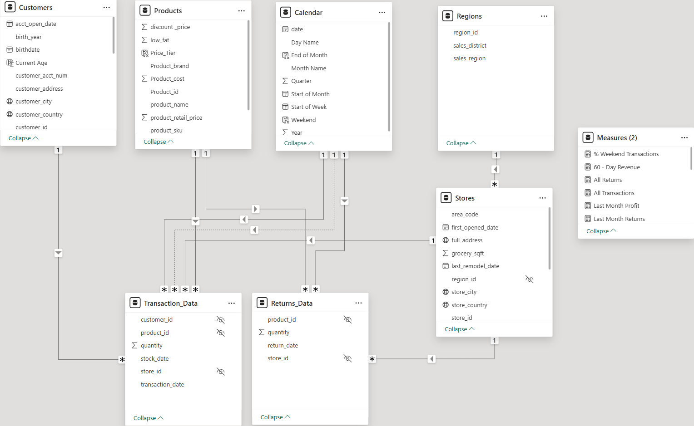
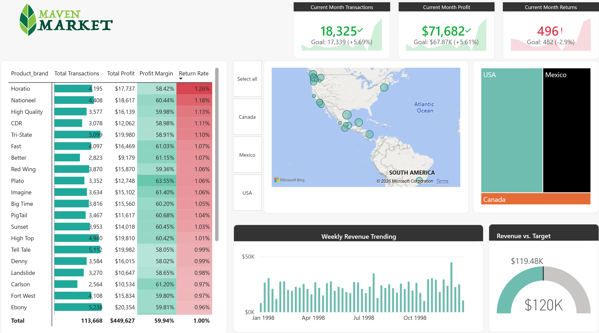
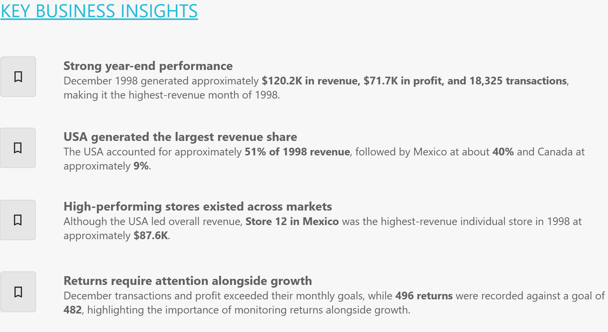
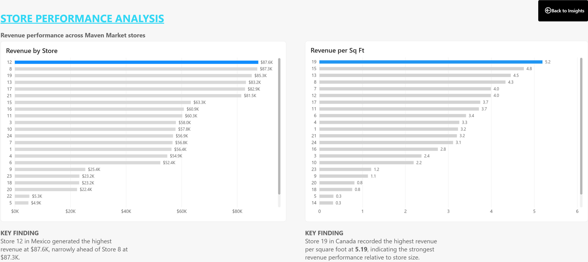
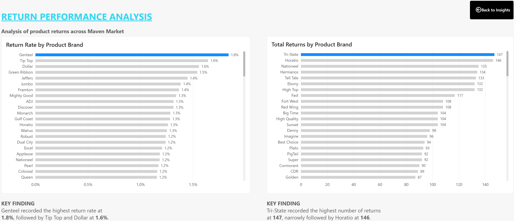

A business intelligence case study using the Maven Market retail dataset to analyze sales, profitability, returns, product performance, store performance, and geographic trends.
The objective of this project was to develop an interactive business intelligence solution that provides management with a clear view of retail performance across products, stores, geographic markets, and time.
The analysis focused on monitoring key performance indicators, comparing current performance with targets, identifying revenue and profitability trends, and examining product returns alongside overall commercial performance.
The model separates transactional activity from descriptive dimensions, allowing measures to be analyzed consistently across customers, products, stores, geography, and time.
Transaction and returns data function as fact tables, while Customers, Products, Calendar, Stores, and Regions provide the analytical dimensions. A dedicated Measures table centralizes reusable DAX calculations.

Power BI model showing transaction and returns fact tables, supporting dimensions, relationships, and the dedicated DAX measures table.
DAX measures were used to create a reusable analytical layer for evaluating transactions, revenue, profit, returns, margins, targets, and time-based performance.
The dashboard brings the main business indicators into a single management view. Users can evaluate current-month transactions, profit, and returns against targets while exploring product, geographic, and revenue performance.

Topline Power BI dashboard displaying KPI performance, product metrics, geographic distribution, revenue trends, and performance against target.
Additional report pages were developed to move beyond topline KPIs and investigate store performance, return behaviour, and the business findings emerging from the analysis.
A dedicated insights page summarizes the most decision-relevant findings from the report and provides navigation to the supporting analysis.

Key Business Insights page summarizing year-end performance, geographic revenue contribution, store performance, and returns.
Store-level analysis compares total revenue with revenue per square foot, helping distinguish overall sales performance from performance relative to store size.

Store performance analysis comparing revenue by store with revenue per square foot.
Return analysis compares product brands using both return rate and total returns, providing complementary views of return frequency and return volume.

Return performance analysis comparing return rate and total returns across product brands.
December 1998 generated approximately $120.2K in revenue, $71.7K in profit, and 18,325 transactions, making it the highest-revenue month of 1998.
The USA accounted for approximately 51% of 1998 revenue, followed by Mexico at about 40% and Canada at approximately 9%.
Although the USA led overall revenue, Store 12 in Mexico was the highest-revenue individual store in 1998 at approximately $87.6K.
December transactions and profit exceeded their monthly goals, while 496 returns were recorded against a goal of 482, highlighting the importance of monitoring returns alongside growth.
Review brands, products, and stores contributing disproportionately to returns to determine whether product quality, fulfilment, or other operational factors require attention.
Compare the strongest stores with lower-performing locations to identify differences in product mix, customer demand, store characteristics, or regional performance.
Continue tracking geographic revenue contribution while evaluating opportunities to strengthen performance in lower-contributing markets such as Canada.